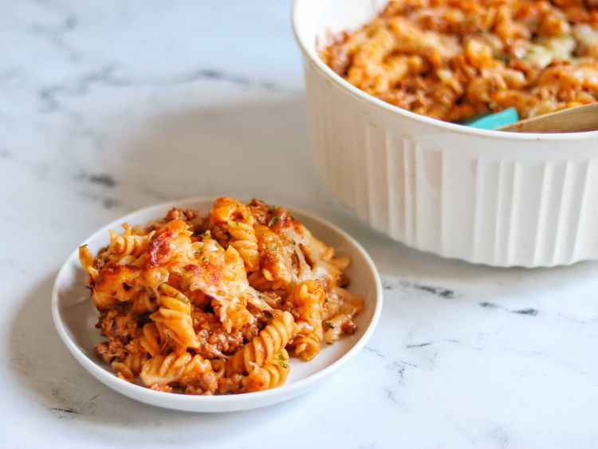

4-Ingredient Hamburger Casserole

Ingredients
- 8 ounces pasta
- 1 pound ground beef
- salt, freshly ground black pepper, and garlic powder, to taste
- 10 ounces tomato soup, canned or homemade
- 8 to 10 ounces shredded mozzarella cheese, divided
Directions
- Preheat the oven to 350 degrees F (175 degrees C).
- Fill a large pot with lightly salted water and bring to a rolling boil. Stir in pasta and return to a boil. Cook, uncovered, stirring occasionally, until tender yet firm to the bite, about 10 minutes. Drain pasta, reserving about 2 tablespoons pasta water.
- Meanwhile, heat a large skillet over medium-high heat. Cook and stir ground beef in the hot skillet until browned and crumbly, 5 to 7 minutes; season with salt, pepper, and garlic powder. Drain and discard grease.
- Place ground beef in a large round casserole dish. Add pasta on top; sprinkle with half the cheese. Pour tomato soup on top; add reserved pasta water and stir everything together well. Cover with foil.
- Bake in the preheated oven, covered, for 15 minutes. Uncover and sprinkle remaining cheese on top. Bake, uncovered, 10 minutes more.
- Turn on the oven’s broiler and set a rack 6 inches from the heat source. Broil casserole until cheese is browned, about 2 minutes. Remove from the oven and serve
Home